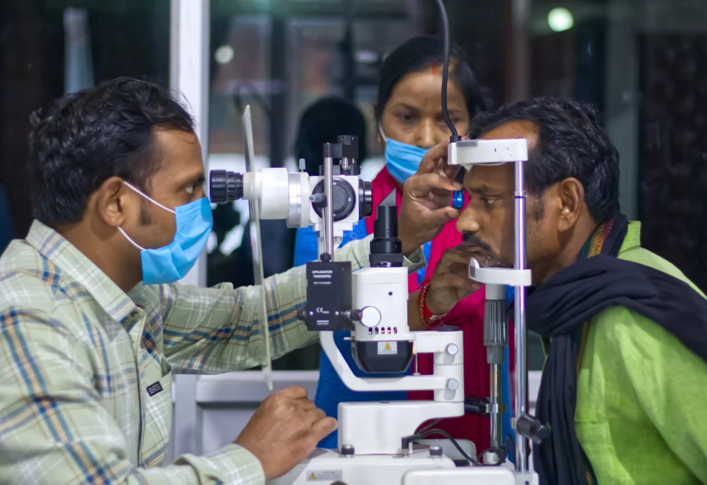
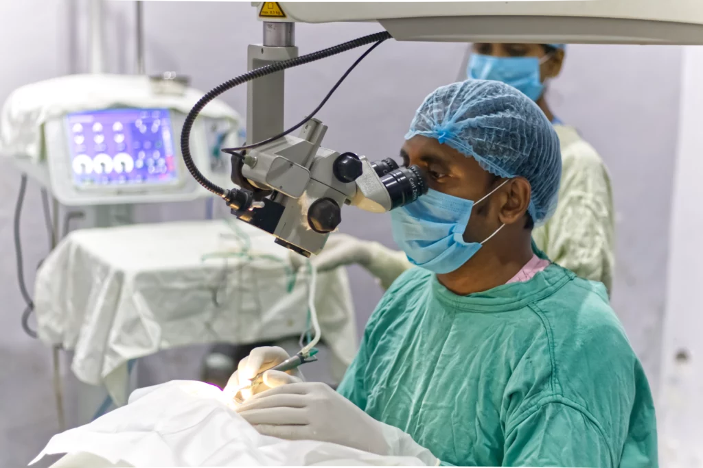
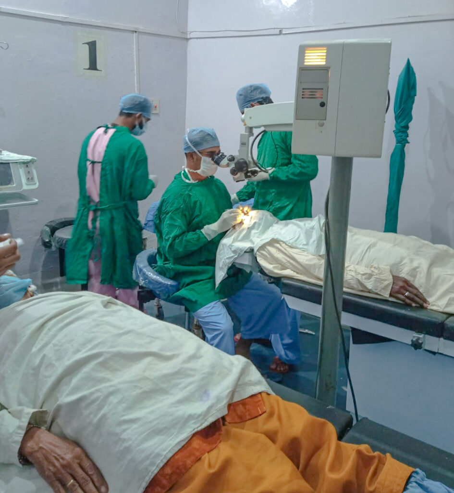
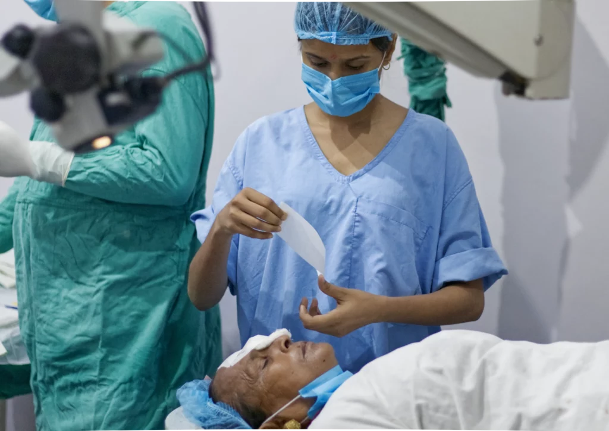

Advanced Eye Diagnostics & Laser Surgery
Sant Kabir Eye Hospital offers premium diagnostic services and advanced micro-surgery options, providing high-quality ocular care for all patients.
25+ Yrs
Surgical Exp.
15k+
Micro-Surgeries
100% Free
NPCB / Ayushman
Our Specialties
Cataract
A cataract is clouding or opacity of the lens inside the eye. It causes gradual blurring of vision and finally blindness.
Glaucoma
Glaucoma is a term given to a group of eye conditions in which the optic nerve is damaged leading to loss of visual field.
Oculoplastic Surgery
Oculoplastic surgery, includes a wide variety of surgical procedures that deal with the orbit (eye socket), eyelids, tear ducts, and the face.
Squint
Squint is a condition where the eyes point in different directions. One eye may turn inwards, outwards, upwards or downwards while the other eye may look differently.
Diabetic Retinopathy
Diabetic retinopathy is a complication of diabetes and causes damage to the retina (Microangiopathy).
Optical Services
Precision computerized vision testing to resolve near-sightedness, far-sightedness, astigmatism, and custom optical prescriptions.
Premium Diagnostic & Treatment Equipment
Retinal Fundus Camera
Painless high-resolution imaging of the retina at the back of the eye. Enables early detection of diabetic retinopathy and glaucoma.
Visual Field Auto Perimeter
Precise computerized visual field testing to map peripheral vision. Critical for early screening of glaucoma and optic nerve damage.
Retinal Green Laser
Advanced, non-invasive photocoagulation laser treatment. Used to seal retinal tears and treat diabetic eye diseases.
B-Scan Ophthalmic Ultrasound
High-frequency sound wave imaging to visualize internal structures of the eye, vital when mature cataracts block direct visibility.
Zeiss Surgical Microscope
World-class precision optics offering maximum visual clarity during high-accuracy micro-surgical cataract procedures.
Non-Contact Tonometer
Quick, pain-free air-puff technology to measure intraocular eye pressure for glaucoma screening without touching the eye.
Free Treatment Under Govt. Schemes
We deliver specialized diagnostic screenings and stitchless cataract surgeries completely free of cost to eligible patients under:
Ayushman Bharat (PM-JAY)
Cashless diagnostics, surgical treatment, and post-op care.
Blindness Control Programme (NPCB)
Direct government sponsored free screening and cataract surgeries.
Hospital Gallery

Advanced Diagnostics Suite
Ophthalmology Consultation Room
Advanced Micro-Surgery Unit
Sterile Operating TheaterWorking Hours
| Monday - Saturday | 09:00 AM - 05:00 PM |
| Sunday | Closed (Emergency Only) |
Note: Closed on festive holidays. Please call ahead to confirm.
Contact & Location
Bansi Road, near Pindari Hospital, Katra, Basti, Moor Ghat, Uttar Pradesh 272001